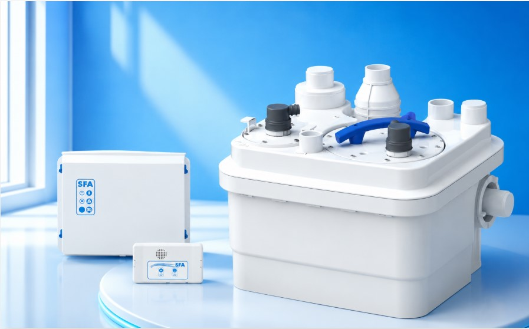
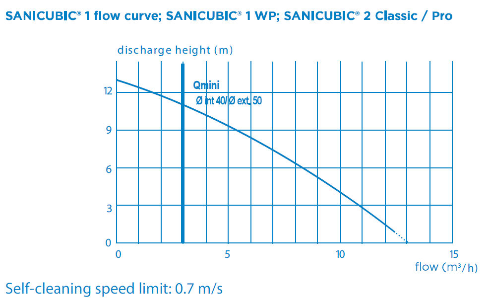
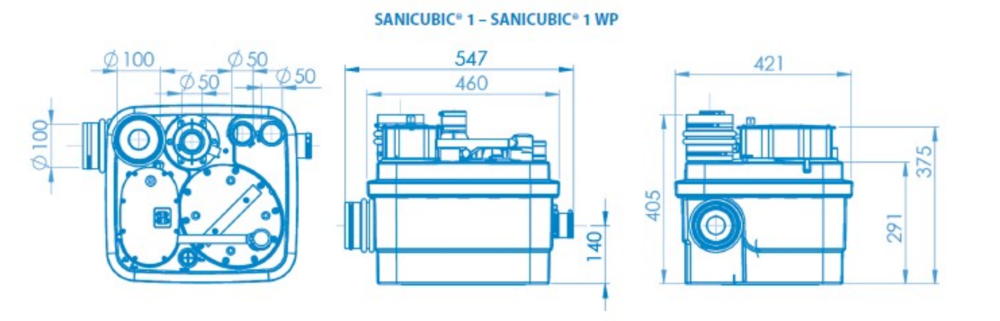
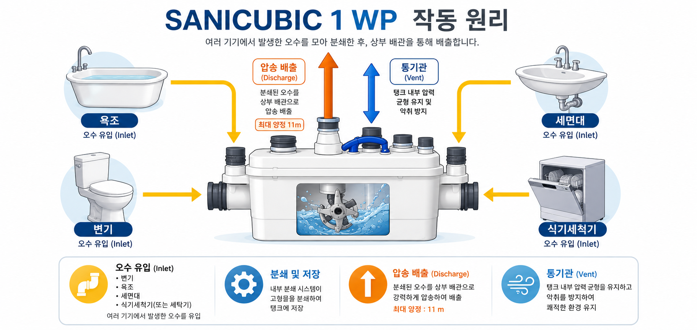

📞 032.347.0815~7
SFA KOREA 공식 대리점 1호 | 한국그런포스펌프(주) 프리미엄 공식 대리점 | 1995년 설립
✉ hyoilpump@daum.net
주거·소형 상업용 건물을 위한 단일 펌프 오수 리프팅 스테이션.
EN 12050-1 준수, 컴팩트한 설계로 좁은 공간에도 설치 가능합니다.


| SANICUBIC 1 WP · 기본 사양 | |
| 표준 규격 | EN 12050-1 |
| 최대 유량 | 13 m³/h |
| 최대 양정 | 11 m |
| 수조 용량 | 32 L (유효 용량 10 L) |
| 펌프 구성 | 단일 펌프 (1대) |
| 펌프 타입 | 블레이드-플레이트 방식 분쇄 |
| IP 등급 | IP 68 (수중형) |
| 최대 액체 온도 | 40°C (5분 최대 70°C) |
| 최대 실내 온도 | 50°C |
| pH 범위 | 4 ~ 10 |
| 유입구 / 토출구 | |
| 유입구 직경 | Ø 40/50/100/110 mm |
| 토출구 직경 | Ø 50 mm |
| 환기구 직경 | Ø 50 mm |
| 하부 유입구 높이 | 바닥에서 140 mm |
| 중량 | |
| 총 중량 (포장 포함) | 26.7 kg |
| 전기 사양 | |
| 전류 타입 | 단상 (Single-phase) |
| 전압 | 220-240 V |
| 주파수 | 50-60 Hz |
| 모터 소비 전력 | 1,500 W |
| 최대 흡수 전류 | 6 A |
| 모터 냉각 방식 | 오일 배스 냉각 |
| 열 보호 | 과부하 열 보호 |
| 절연 등급 | F 클래스 |
| 제어박스 케이블 | 4 m - H07 RN-F-4G 1.5 |
| 제어박스 소켓 케이블 | 2.5 m - H07 RN-F-3G1.5 |
| 운전 모드 | |
| 운전 방식 | 간헐 운전 S3 30% |
| 최대 기동 횟수 | 60회/시간 |
| 수위 감지 | 레벨 센서 (딥 튜브) 방식 |
| 본체 치수 | |
| 전체 폭 | 570 mm |
| 전체 깊이 | 460 mm |
| 전체 높이 | 426 mm (상부 유입구 포함) |
| 하부 높이 | 140 mm |
| 제어박스 치수 | |
| 폭 | 242 mm |
| 높이 | 187 mm |
| 깊이 | 110 mm |
| 알람 유닛 치수 | |
| 폭 | 156 mm |
| 높이 | 86 mm |
| 깊이 | 40 mm |
설치 규모와 신뢰성 요구 수준에 따라 최적 모델을 선택하세요. 단독·소형 건물에는 1 WP, 대형 상업용·공동주택에는 2 GR이 적합합니다.
| 항목 | Sanicubic 1 WP ★ | Sanicubic 2 GR |
|---|---|---|
| 펌프 구성 | 단일 펌프 (1대) | 이중 펌프 (2대) |
| 전원 | 220-240V 단상 | 400V 3상 |
| 최대 유량 | 13 m³/h | 17 m³/h |
| 최대 양정 | 11 m | 최대 39 m |
| 수조 용량 | 32 L | 137~144 kg (대형) |
| 최대 액체 온도 | 70°C (5분 최대) | 55°C |
| 고장 대비 | 단일 펌프 운전 | 한 대 고장 시 자동 인수 |
| 적용 규모 | 단독주택, 소형 상업용 | 대형 상업용, 공동주택 |
| 설치 공간 | 컴팩트 (570×460mm) | 대형 (1198×600mm) |
| EN 12050-1 준수 | ✅ | ✅ |



유입관은 최소 3% 하향 기울기를 유지하세요. 변기에서 본체까지 최대 4m 이내 권장. 유입관과 배수관에 체크밸브와 차단밸브를 설치하세요.
EN 12050-1 권고에 따라 지붕 위로 환기관(Ø 50mm)을 연결해야 합니다. 기계식 환기장치나 다이어프램 밸브(흡기 밸브) 연결 금지.
역류 방지를 위해 토출 배관을 역사이폰(loop) 형태로 배관하세요. 최고점은 역류 수위보다 높아야 합니다.
고형물, 섬유, 모래, 시멘트, 재, 두꺼운 종이, 물티슈, 판지, 잔해, 도살장 폐기물, 기름, 그리스 등은 투입 금지. 기름기 많은 폐수는 그리스 트랩 설치 필수.
본체 사방 600mm 이상 여유 공간 확보. 수리·점검을 위해 상부 접근 공간 확보. 진동 절연 마운트 설치 권장 (소음 방지).
10 Mini Amp 고감도 누전 차단기 설치 필수. 반드시 접지 연결. 전기 연결 작업은 자격을 갖춘 전기 기사가 수행해야 합니다.
하수 배수 수위보다 낮은 위치에서 오수를 강제 배수해야 하는 모든 소형 건물·주거 환경에 적합합니다.
SFA KOREA 공식 대리점 1호 효일종합상사가 최적의 모델과 설치 방안을 제안해 드립니다.